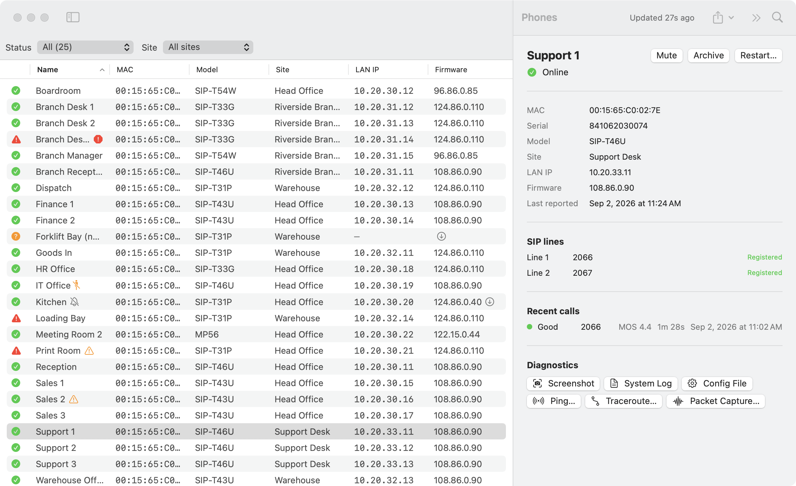
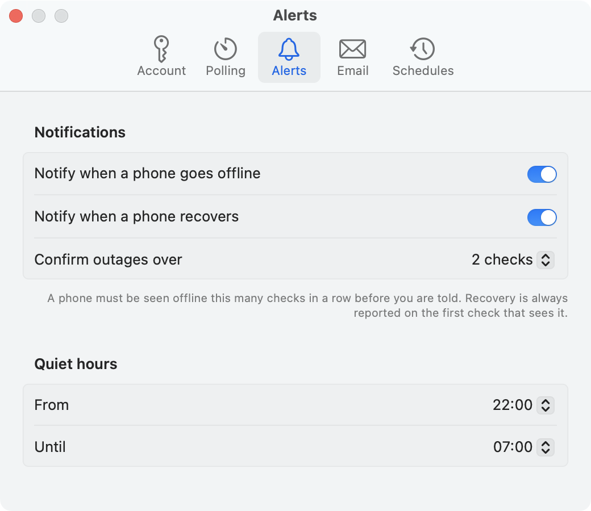
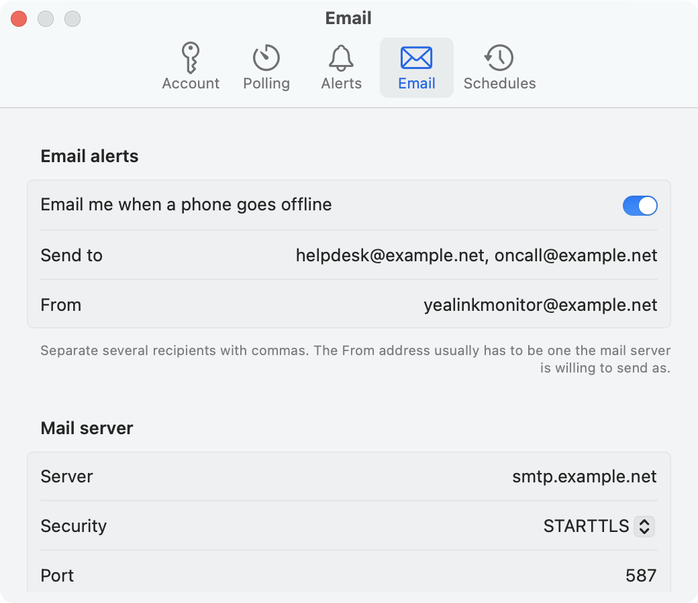
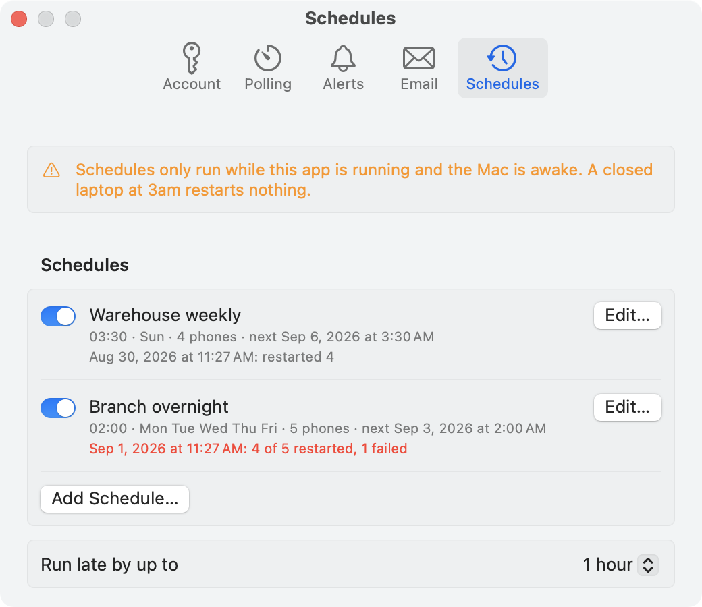

Requirements
- macOS 14 or later. Release builds are universal, so the bundle runs natively on both Apple Silicon and Intel.
- A YMCS subscription with API access, and a Client ID / Secret pair.
- To build from source: a Swift 6.1 toolchain. The Command Line Tools are enough — Xcode is not required.
Installing
Download the latest zip from
Releases,
unzip it, and drag YealinkMonitor.app into
/Applications.
Released builds are signed with a Developer ID certificate and notarized by Apple, so they open without any Gatekeeper ceremony. A bundle you built yourself is only ad-hoc signed and behaves differently — see Building from source.
The app has no Dock icon and no app switcher entry. It lives entirely in the menu bar.
First run
Confirm API access first
Nothing else works until this passes, so it is worth doing before anything else. In YMCS, the credentials are under System ▸ Integration ▸ API.
export YMCS_CLIENT_ID='...'
read -rs YMCS_CLIENT_SECRET && export YMCS_CLIENT_SECRET
./Scripts/smoke-test.shThe script tries each regional host in turn and reports which one your enterprise is in. That matters, because a wrong region and a wrong secret produce the same HTTP 401 — guessing is the only way to tell them apart without asking Yealink. The app's Save & Test Connection does the same probe.
YMCS issues one Client ID/Secret pair per enterprise. Check whether another integration is already using them before generating a new pair — generating one invalidates the old.
Enter the credentials
Open Settings from the menu bar item, put the Client ID and Secret into the Account tab, and press Save & Test Connection. The secret goes into the login keychain; everything else goes into the app's preferences.
Deploying to other Macs
Copy the app across, then provision that machine once:
./Scripts/provision.sh --id '<AccessKey ID>' --region au \
--app /Applications/YealinkMonitor.app
It prompts for the secret (or reads YMCS_CLIENT_SECRET from the
environment), stores it in the login keychain, and writes the Client ID and
region to the app's preferences. --uninstall reverses both.
If you are deploying a bundle you built rather than a released one,
--app <path> also clears the quarantine flag, which an
ad-hoc signed bundle needs. See Building from source.
Credentials and what they authorise
The YMCS AccessKey is an enterprise-wide write credential. It authorises device restart, factory reset, firmware push and configuration push across every phone in the enterprise. YMCS issues one pair per enterprise, so it cannot be scoped down, and it cannot be rotated for this app alone without breaking every other integration that uses it.
Embedding it in the bundle
make-app.sh --embed bakes the credentials into
Info.plist so a copied app just works with no setup. That is a
real decision rather than a convenience.
Info.plist is plain text; a string in a bundle comes straight
back out with strings. An embedded build is therefore a
copyable, unrevokable grant of restart-and-factory-reset authority over the
whole fleet. It is a credential you are handing out, not merely an app — and
provision.sh exists so that you do not have to.
The release script refuses to package a bundle with embedded credentials, and
the repository's .gitignore excludes *.app/
anywhere in the tree for the same reason.
How it polls
Monitoring starts when the app launches, not when you first open the popover.
That is worth stating because it is easy to get wrong: with
.menuBarExtraStyle(.window), SwiftUI builds the popover's content
lazily, so anything hung off it never runs on a Mac that boots and is left
alone. The polling loop is started from the menu bar label instead,
which is rendered immediately. Nothing on that path is allowed to block:
notification permission is requested afterwards, and the keychain is not
touched at all unless the bundle carries embedded credentials.
Why polling, and not events
YMCS does support pushed events — there is an Event Subscription panel in the console, under System ▸ Integration ▸ API — but delivery needs a publicly reachable URL for YMCS to POST to, which a Mac behind NAT has not got. So this app polls.
The request budget
The enterprise-wide limit is 50 requests per second, shared with every other integration using the same credentials, so the loop stays cheap.
| Every | What | Cost |
|---|---|---|
heartbeat(default 60s) |
GET /v2/dm/statistics/deviceCount?deviceStatus=0 |
1 request |
| when that count moves | POST /v2/dm/listDevices, paged at 100 |
~1 request per 100 phones |
fullRefresh(default 600s) |
full listing regardless | same |
detailRefresh(default 1800s) |
GET /v2/dm/devices/{id} for each phone |
1 request per phone |
| while a device is mid-debounce | full listing, so confirmations can accumulate | same |
A 100-phone fleet at rest costs roughly one request per minute, plus a burst of one-per-phone every half hour.
That last sweep is the expensive one, and it exists because
listDevices returns no LAN IP, no serial and no SIP line state —
only GET /v2/dm/devices/{id} does, one phone at a time. It runs
four at a time, paced by the rate limiter, and the device list is drawn before
it starts, so a slow sweep never delays the window. The LAN IP
column reads “—” until the sweep reaches that phone.
Debouncing
A phone must be seen offline for a configurable number of consecutive checks (two by default) before you are told. Recovery is reported on the first check that sees it, because there is no cost to being told early that something is working again.
The Phones window

Selecting a phone fills the detail pane on the right with what the detail sweep has fetched: LAN IP, serial, SIP line state, active alarms, accessories, recent calls, the diagnostic buttons, and this app's own record of the phone's recent status changes.

What the markers mean
| Marker | Means |
|---|---|
| Green tick | Online, as far as YMCS knows. Check Last reported in the detail pane to see how stale that view is. |
| Red triangle | Offline: the phone has reported in before and is not now. |
| Amber question mark | Never reported. Registered in YMCS and has never phoned home — typically never provisioned or never powered on. A different problem from offline, and kept separate throughout. |
| Red exclamation | YMCS has an active alarm against this phone, independent of this app's own view. A phone can be reachable and still have a critical alarm. |
| Amber triangle | Online, but something inside it is not right — most often a SIP line that is not registered, which means the handset cannot take calls on it. |
| Broken-figure icon | An accessory is attached and not working: a headset or expansion module that has stopped reporting. The phone itself looks perfectly healthy. |
| Bell with a slash | Muted. See Muting and archiving. |
| Down arrow beside the firmware | Running an older build than the rest of its model. Not an alert — a phone can be deliberately held back — but the first thing to check when one handset behaves differently. |
| “—” in LAN IP | The detail sweep has not reached that phone yet, or the phone has never reported one. |
The fleet firmware reference is the most common version for that model, not the highest: one phone on a beta build should not make the whole fleet look out of date.
Muting and archiving
Two different things, deliberately kept apart.
Mute
“Stop telling me about this phone.” It stays in the fleet, stays in the counts and still shows its real status; only the notification is withheld. Right for a phone with a known fault someone is already dealing with.
Archive
“This phone is not in service.” A spare in a cupboard is meant to be offline, and a monitor showing a permanent red triangle for it trains you to ignore red triangles.
Archived phones are removed from:
- the menu bar count and the popover
- the status filters and their counts
- notifications and email
- bulk actions — so Restart All Listed cannot reach the spare in the cupboard
They are not hidden, just moved: the status filter gains an Archived entry, they are marked in the export's own column, and Settings ▸ Alerts has a Restore All.
Archive from the right-click menu in the Phones window, or the button in the detail pane.
A schedule that already names a phone you later archive keeps naming it, shown with an archive marker in the schedule editor. Silently dropping it would change what a saved schedule does without saying so.
Notifications

Notifications fire on confirmed outages and on recoveries. Quiet hours suppress them between two times, and may wrap past midnight — the common 22:00–07:00 case is handled correctly. Setting the two times equal disables quiet hours.
Quiet hours exist to stop the Mac interrupting the person sitting at it. They do not apply to email by default, for the reason in the next section.
Email alerts

Email needs an SMTP relay that will accept authenticated submission — a provider mailbox or an internal relay. STARTTLS on port 587 and implicit TLS on port 465 are both supported. The password lives in the login keychain next to the YMCS secret, and is never sent over an unencrypted connection.
Alerts are batched (60 seconds by default), so a switch failure that takes forty phones offline sends one email rather than forty, and capped per hour. Over the cap, alerts are held and sent together rather than dropped.
Quiet hours do not apply to email by default: overnight is usually when you most want to be told. There is a setting if you disagree.
Restarting phones
Restart is the only write this app can perform. It is available for one phone from the detail pane, for a selection from the right-click menu, and for everything currently listed from the toolbar — where “listed” means after the filters, which is why the menu item says Restart All Listed.
Three things worth knowing:
- An offline phone cannot be restarted. The command goes to YMCS, which has no way to reach a phone that is not talking to it. YMCS accepts the request regardless, so the app says so rather than reporting success.
- A restart looks exactly like an outage. For a settling window afterwards (10 minutes by default) the resulting drop is recorded but not alerted. A phone that has not come back when the window closes is reported.
-
A partial failure is an HTTP 200. The endpoint answers
success and puts the detail in
errors[], so the app reports counts rather than treating a non-error as a job done.
Factory reset is not implemented and is not going to be.
POST /v2/dm/device/reset differs from the reboot endpoint by
one path segment and takes an identical body, so the protection against
firing it by accident is that no code here can express it.
Scheduled restarts

A schedule is a fixed list of phones, a time, and the days it runs — saved by device id rather than by site or filter, because a filter-based schedule silently grows as phones are added.
Schedules only fire while this app is running and the Mac is awake. That is a property of a menu bar app, not something this code can work around: it would need a LaunchAgent or a server-side scheduler, and YMCS has no scheduling endpoint.
An occurrence missed by less than the grace window (one hour by default) runs late and says so. One missed by longer is recorded as skipped rather than firing at a surprising time — a restart hours after the time it was asked for is an unexplained outage, not a helpful catch-up. Every run reports by notification, and by email if configured.
Diagnostics
Select a phone in the Phones window and use the buttons in its detail pane.
Everything there runs on the phone, which is the point:
ping 10.0.0.1 from your Mac says nothing about whether the
handset in the back office can reach its gateway.
| Diagnostic | Result |
|---|---|
| Ping | Shown inline in the detail pane. |
| Traceroute | Shown inline in the detail pane. |
| System Log | Saved to Downloads and revealed in Finder. |
| Config File | Saved to Downloads and revealed in Finder. |
| Screenshot | What is on the handset's display, saved to Downloads. |
| Packet Capture | Runs for its full duration — three minutes minimum, per the API — before the file exists. |
Each one is asynchronous: the request only asks the phone to do something, and the result arrives later as a file.
The file type is worked out from the bytes rather than from the
documentation, which is wrong about it: exportSyslog is
described as producing a text file and actually returns a zip of
datalog/*.log. Archives are expanded on arrival, so
Show in Finder opens a folder of readable logs rather than a
file that looks corrupt.
An offline phone cannot run any of them, and the buttons are disabled with that reason given rather than left to fail.
Activity
The Activity… window has two things YMCS knows that the device list does not. Both are fetched when you open the window rather than polled, because neither feeds an alert and polling them would spend the enterprise's request budget on data nobody is looking at.
Call quality
How calls actually sounded, with the MOS score (1–5) for the worse direction. A phone that is online around the clock and rates Bad on every call is a fault nothing else here can show. A call is only as good as its worse leg, and a zero means “not measured” rather than “terrible”, so unmeasured directions are ignored rather than averaged in.
Two things the API document gets wrong here, both confirmed against a live
tenant. duration is documented as milliseconds and is actually
seconds, so durations are derived from the start and end timestamps
instead. And callerURI/calleeURI are documented
but come back null, so the table shows the account and MOS rather than two
columns that can never fill.
Operation log
What anyone changed in YMCS, this app included. It answers “did someone push config to this phone just before it started dropping?”, and it is the independent record of the restarts this app performed.
YMCS returns i18n keys rather than text, e.g.
i18n.yiot.backend.operation.device.management.restart. The last
two segments are the only readable part, so that is what the Action column
shows.
Exporting
The Phones window has an Export menu with the same two scopes as Restart: everything currently listed (so the filters are in force — the menu says “All Listed” for that reason) or just the selection.
The CSV carries what the window shows plus what the detail sweep has filled in: IP, serial, SIP line counts, unregistered lines, accessory faults, active alarms, firmware drift and whether the phone is archived.
It is written with a UTF-8 BOM, because Excel otherwise reads the file in the system's legacy encoding and mangles anything non-ASCII.
History
Confirmed status changes are appended to a capped on-disk log at
~/Library/Application Support/YealinkMonitor/history.json, and
the last of them for a given phone appear in its detail pane under
Recent changes.
This answers a question the API cannot: “how often does this phone actually drop?” YMCS alarms only describe currently-active problems. Each entry records whether the change was observed by polling or caused by a restart this app performed, so a nightly scheduled reboot does not read as a nightly outage.
Demo fleet
Launching with -demoFleet YES replaces the live fleet with an
invented one: an organisation that does not exist, four sites and twenty-six
phones arranged to contain one of everything worth showing — an outage, a
handset that never provisioned, a phone that is online with an unregistered
line, a dead expansion module, firmware drift and an archived spare.
/Applications/YealinkMonitor.app/Contents/MacOS/YealinkMonitor -demoFleet YESIt never creates a monitor, so no request is made and no credential is read — a demo run works on a Mac that has never been provisioned. It substitutes its own settings rather than loading yours, with saving suppressed, so opening the Settings window in a demo run cannot show or overwrite your real configuration. Its history goes to a scratch file rather than the real one.
Every screenshot on this site was taken from it.
Known limits
- Detection latency is bounded by YMCS, not by this app. Phones report in on their own schedule; the detail pane shows Last reported so you can see how stale YMCS's own view is.
- A simultaneous swap hides from the heartbeat. If one phone drops in the same interval as another recovers, the offline count is unchanged. The periodic full refresh bounds how long that can go unnoticed.
- Stale is not offline. If polling fails, the last known device list stays on screen and is clearly marked stale rather than being wiped or presented as current.
- Schedules need the Mac awake. See Scheduled restarts.
- No App Sandbox. Released builds are signed and notarized with the hardened runtime, but not sandboxed.
Building from source
git clone https://github.com/tony-nz/YealinkMonitor.git
cd YealinkMonitor
./Scripts/make-app.sh release run
This renders the icon, compiles with SwiftPM, assembles
build/YealinkMonitor.app by hand and ad-hoc signs it. Xcode is
not required — the macOS SDK shipped with the Command Line Tools has
everything the app uses.
Release builds are universal. SwiftPM's own --arch flag needs
Xcode's xcbuild, which the Command Line Tools do not ship, so
each slice is built separately and lipo'd together. Debug builds
stay native-only, because the second slice roughly doubles the build time.
Tests
swift testThe API client, polling engine, transition detector, rate limiter, alert digest, schedule arithmetic and SMTP client are all covered and have no UI dependency.
Gatekeeper and a bundle you built yourself
A locally built bundle is only ad-hoc signed, so Gatekeeper rejects it on any Mac it did not come from. On macOS 15 the refusal reads “YealinkMonitor is damaged and can't be opened”, which sounds like a corrupt download and is not: it is what an ad-hoc signed, quarantined bundle looks like to Gatekeeper. There is no right-click bypass for that wording.
Either clear the flag on the target machine:
xattr -dr com.apple.quarantine /Applications/YealinkMonitor.app
(provision.sh --app <path> does this as part of
provisioning, so running it is usually all that is needed.)
Or copy it by a route that never sets the flag — scp,
rsync, a Finder copy from a USB disk. Transfers that do set it
(AirDrop, email, a browser download) are blocked outright.
None of this applies to a build from Releases, which is notarized.
Layout
Sources/YMCSKit/ API client, polling engine — no UI, fully tested
Client.swift typed endpoints, retry and error mapping
TokenStore.swift OAuth2 token cache with single-flight refresh
RateLimiter.swift GCRA shaper + mandated 30s backoff on 429
Monitor.swift heartbeat/full-refresh polling loop, snapshots
Transitions.swift debounced online/offline change detection
AlertDigest.swift batching and rate limiting for email alerts
RebootSchedule.swift calendar-correct scheduled restart times
Models.swift devices, alarms, accessories, calls, logs
Sources/SMTPKit/ minimal SMTP submission client — no UI, fully tested
SMTPClient.swift EHLO/STARTTLS/AUTH/DATA conversation
SMTPMessage.swift RFC 5322 headers and quoted-printable body
SMTPTransport.swift CFStream socket, upgradable to TLS in place
Sources/YealinkMonitor/ SwiftUI app
DemoFleet.swift the synthetic fleet behind -demoFleet YES
Scripts/smoke-test.sh Phase 0 API check
Scripts/provision.sh seed a Mac's keychain and preferences
Scripts/make-app.sh build the .app bundle without Xcode
Scripts/release.sh sign, notarize, staple and publish a release
Scripts/make-icon.swift draws AppIcon.icns from paths at every sizeCutting a release
Scripts/release.sh builds the universal bundle, signs it with a
Developer ID certificate and the hardened runtime, submits it to Apple's
notary service, staples the ticket into the bundle and packages the result.
./Scripts/release.sh 0.1.0 # build and notarize
./Scripts/release.sh 0.1.0 --publish # ... and create the GitHub releaseOne-time setup on the machine that cuts releases
- A Developer ID Application certificate, created at developer.apple.com under Certificates ▸ + ▸ Developer ID Application. An “Apple Development” certificate is a different thing and cannot notarize. On an organisation account only the Account Holder can create one.
-
Notary credentials stored once in the keychain:
The password is an app-specific password from appleid.apple.com, not the Apple ID password.xcrun notarytool store-credentials YealinkMonitor \ --apple-id you@example.com \ --team-id <team id> \ --password <app-specific password> - For
--publish, an authenticated GitHub CLI:gh auth login.
The script refuses to run against a dirty working tree, and refuses to
package a bundle built with --embed: a release carrying the YMCS
AccessKey would hand enterprise-wide write authority to anyone who clicked
Download.